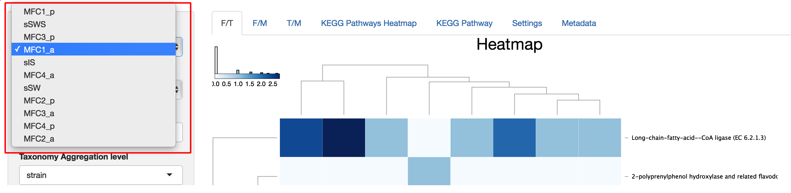
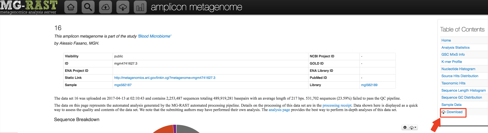
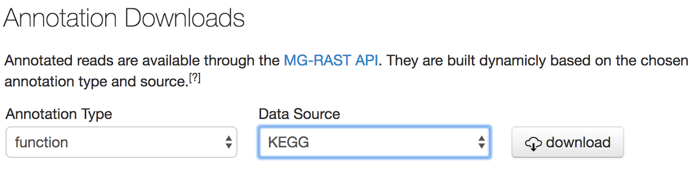

Askarbek Orakov1,2,*, Nazgul Sakenova1,2, Anatoly Sorokin3,4 and Igor Goryanin1,5,6
1Okinawa Institute of Science and Technology, Onna-son, Japan, 2School of Science and Technology, Nazarbayev University, Astana, Kazakhstan, 3Institute of Cell Biophysics RAS, Pushchino, Russia, 4Laboratory of Ion and Molecular Physics, Moscow Institute of Physics and Technology, Moscow, Russia. 5University of Edinburgh, School of Informatics, Edinburgh, United Kingdom, 6Tianjin Institute of Industrial Biotechnology, Biodesign centre, Tianjin, China.
Code can be found on GitHub: https://github.com/Askarbek-orakov/ASAR
Summary
Introduction
Results
Parameters
Installation
Data Preparation
Manual download of files
How to cite us
References
What is it? The functional and taxonomic analysis is the critical step in understanding the interspecies interaction within the biological community. At the moment these types of analysis are run separately which makes results difficult for interpretation. Here we present ASAR interactive tool for simultaneous analysis of the metagenomic data along three dimensions: taxonomy, function, metagenome.
What is required from a user? The user needs to have R and some R packages installed in the user’s computer. Additionally, terminal is needed to run the BASH script that will download, process and save data in the appropriate format to be read by the application. The annotation files from MG-RAST are used as an example data. In order to use data from MG-RAST only project ID and user webkey are needed from the user.
Why should I use it? Advantages of the tool are 1) Integrated functional and taxonomic analysis; 2) Comparative analysis of KEGG pathway enrichments; 3) KEGG Pathway Maps; 4) User-friendly interface.
This application implements two general analyses. First, it builds 3D dataset consisting of axes of taxonomy, functions and metagenome samples [1,2]. Second, through KEGG metabolic pathways analysis consists of a comparative analysis of pathways enrichment and visualization of pathways themselves [3].
Since taxonomic and functional annotations have many groups at several levels and metagenome samples are numerous, two main data manipulations are implemented. First, “Selection” involves selecting one or several separate groups in each axis at a certain level in functions and taxonomy. Second, “Aggregation” involves selecting a level lower than “Selection” level at which selected data should be aggregated to groups of this level by summing read counts. “Aggregation” of metagenomes is done by averaging metagenomes with same defined name.
There is the sample data to explore the app, and to use your own data, please, read the section “Data preparation”.
3D dataset (Function & Taxonomy & Metagenomes) Interactive Heatmaps
Heatmaps contain dendrograms to the left and above from heatmap and column and row names below and to the right from the heatmap. Dendrograms are generated with “hclust” function in R and color key upleft to heatmaps represents the distribution of color in the heatmap. The value of the cell in the heatmap can be viewed by locating mouse cursor above that cell. The value of the cell is the log2 value of read count for that cell.
KEGG Pathways Heatmap
In addition to characteristics explained for 3D dataset heatmaps, KEGG Pathways Heatmap has Standard Deviation cutoff explained in parameters section for SD cutoff.
KEGG Pathway
 KEGG Pathway shows the metabolic pathway image for selected KEGG pathway and color enzymes with known expression in metagenomes. Each rectangle representing enzyme is horizontally divided into a number of selected metagenomes, where coloration of partitions corresponds to values of selected metagenomes(i.e. Partitions are colored from left to right as an order of selected metagenomes). Values of enrichment represent percent contribution of selected taxon from total read count of the whole metagenome to this KEGG Orthology(enzyme). The color key will represent a variation from zero to maximum value among KO’s in the pathway.
KEGG Pathway shows the metabolic pathway image for selected KEGG pathway and color enzymes with known expression in metagenomes. Each rectangle representing enzyme is horizontally divided into a number of selected metagenomes, where coloration of partitions corresponds to values of selected metagenomes(i.e. Partitions are colored from left to right as an order of selected metagenomes). Values of enrichment represent percent contribution of selected taxon from total read count of the whole metagenome to this KEGG Orthology(enzyme). The color key will represent a variation from zero to maximum value among KO’s in the pathway.
Metagenome Selection
Function vs Taxonomy (F/T) heatmap requires selection of single metagenome, while all others allow selection of multiple metagenomes(see figure 6). Names of metagenomes shown for selection can be changed by selecting a specific column of metadata, rows of which will be used as metagenome names (see figure 7). In order to consider several metagenomes as one, these metagenomes should be given the same name in selected metadata column. In this case abundances of reads of metagenomes with same names are averaged in new metagenome under shared name before any abundances processing steps.

Taxonomy and Function Selection
There are 8 choices for taxonomy level, where "root" means all domains and 7 levels from “domain” to “strain”. At all levels except "root" taxon selection will give a list of all available taxons at that level and multiple taxon selections are possible. At last, second taxon level is used to aggregate selected taxons at that level. Functions are selected with the same principle with the only difference that it has 5 levels instead of 8 (see figure 8).
Pathway Selection for Building KEGG Pathway
The list of KEGG Pathways available for current selection of metagenomes and taxons is displayed for selection. Selecting Pathway will send the request to build KEGG Pathway and may take up to several seconds depending on the number of genes in the pathway.
Heatmap Height Selection
Default height of heatmaps is 20 pixels per row and is adjustable through slider input parameter, which displays and sets the height of a single row in pixels.
Image Download
Every heatmap can be downloaded by typing a user-defined file name in “Enter file name” text input parameter and selecting image format (PNG or PDF) and subsequently pressing the Download button. KEGG map image is downloaded in the same way but without defining file name. Alternatively, map image can be saved by clicking the right mouse button (usual browser functionality), where user can define filename.
Standard deviation cutoff for KEGG Orthology terms
KEGG Pathways Heatmap and KEGG Pathway have the parameter called “SD cutoff for KO terms” which defines the value of Standard Deviation for individual KO’s among all selected metagenomes and is adjustable. This value cuts off all KO’s with SD less than that value from Heatmap.
Parameters in Metadata Tab
Selection of column of metadata displays all column of metadata and allows to use rows of these columns as names of metagenomes in metagenome selection parameter. Metadata values are editable and new columns with a name specified by user can be added to the metadata. There are three types of new column user can select, namely “integer”, “double” and “character”. Pushing “Save” button updates default RData file with current dataset. Pushing “Save a new column” button will update metadata but current Rdata should be saved and run in new session. When metagenome names from some column of metadata are used identically named metagenome data will be averaged and analyzed as single metagenome. This is how aggregation of metagenomes is done.
Parameters in Settings Tab
Upload function can be used to upload Rdata files generated previously and Save function can be used to save current state of loaded dataset. Settings tab has entries for changing default values of functional and taxonomic levels. Palette of colors used for coloring heatmaps can also be selected. Pressing “Save changes” button will save these default parameters for next sessions.
R Packages from CRAN:
Package ‘shiny’ version 1.0.3
Package ‘ggplot2’ version 2.2.1
Package ‘gplots’ version 3.0.1
Package ‘data.table’ version 1.10.4
Package ‘plyr’ version 1.8.4
Package ‘stringr’ version 1.2.0
Package ‘shinythemes’ version 1.1.1
Package ‘matrixStats’ version 0.52.2
Package ‘png’ version 0.1-7
Package ‘devtools’ version 1.13.2
Package ‘rhandsontable’ version 0.3.4.6
Package ‘RColorBrewer’ version 1.1-2
Bioconductor:
Package ‘mmnet’ version 1.15.0-1
Package ‘pathview’ version 1.14.0
Package ‘biomformat’ version 1.2.0
Package ‘KEGGREST’ version 1.14.1
Package ‘limma’ version 3.30.13
GitHub:
To run the app on your local machine:
Download RStudio/R
Run these commands below in the console:
install.packages(c("shiny","ggplot2","gplots","RColorBrewer","data.table","plyr","stringr","shinythemes","matrixStats","png","devtools","rhandsontable"))
## try http:// if https:// URLs are not supported
source("https://bioconductor.org/biocLite.R")
biocLite("mmnet")
biocLite("pathview")
biocLite("biomformat")
biocLite("KEGGREST")
biocLite("limma")
install_github("Alanocallaghan/d3heatmap")
Preparation of data from MG-RAST only requires project ID and webkey to be given to BASH script which subsequently downloads and processes all required files and generates Rdata file that is directly used by the application.
The list of required input files:
Functional annotations file either by KEGG or SEED
Taxonomic annotations file either by KEGG or SEED
KEGG Orthology file
Biom file
Metadata
Our app uses MG-RAST annotations as an example. MG-RAST has both public and private projects which can be downloaded as it is described in its manual. There are two ways of downloading files from MG-RAST and prepare them for the input.
The first way is to download files directly from MG-RAST website, while second way is to download files through API or other command line tools, such as a terminal. In the case of the former way, you will have to rename files manually, while in the case of the latter way, given code will download files automatically and rename them automatically.
1. Download files directly from MG-RAST website as follows.
Screen Shot 2017-07-19 at 13.50.01.png

Screen Shot 2017-07-19 at 13.52.04.png
Screen Shot 2017-07-19 at 13.55.34.png


Screen Shot 2017-07-18 at 14.04.37.png

Screen Shot 2017-07-18 at 13.43.58.png

Screen Shot 2017-07-18 at 13.20.50.png
g. Download metadata file by entering a project and pressing file icon as shown below and rename the file as “jobs.tsv”.
1.Press icon shown below.
Screen Shot 2017-07-19 at 14.00.07.png
2. Select all.

Screen Shot 2017-07-19 at 14.02.15.png
3. Press the icon shown below to download metadata.

Screen Shot 2017-07-19 at 14.08.22.png
2. Download files through API or other command line tools, such as a terminal.
You can find how to download files through API by clicking this link.
An example of how to download files through terminal is shown below.
Webkey will be needed to download files from private projects. To get your webkey in MG-RAST, press “ show webkey” as indicated below.

Screen Shot 2017-07-19 at 11.16.45.png
Open Terminal and run this chunk of code after modifying webkey and metagenome ID (as marked by red squares) to download your files.
Screen Shot 2017-07-19 at 13.19.26.png
curl -H "auth: your_webkey_comes_here" -H 'Accept-Encoding: gzip,deflate' "http://api-pql.metagenomics.anl.gov/1/annotation/similarity/mgm4714675.3?source=SEED&type=function&identity=60&length=15" -o mgm4714679.3.fseed
curl -H "auth: your_webkey_comes_here" -H 'Accept-Encoding: gzip,deflate' "http://api.metagenomics.anl.gov/1/annotation/similarity/mgm4714675.3?source=SEED&type=organism&identity=60&length=15" -o mgm4714675.3.seed
curl -H "auth: your_webkey_comes_here" -H 'Accept-Encoding: gzip,deflate' "http://api-pql.metagenomics.anl.gov/1/annotation/similarity/mgm4714675.3?source=KEGG&type=function&identity=60&length=15" -o mgm4714679.3.fkegg
curl -H "auth: your_webkey_comes_here" -H 'Accept-Encoding: gzip,deflate' "http://api-pql.metagenomics.anl.gov/1/annotation/similarity/mgm4714675.3?source=KEGG&type=organism&identity=60&length=15" -o mgm4714679.3.kegg
curl -H "auth: your_webkey_comes_here" -H 'Accept-Encoding: gzip,deflate' "http://api-pql.metagenomics.anl.gov/1/annotation/similarity/mgm4714675.3?source=KO&type=ontology&identity=60&length=15" -o mgm4714675.3.ko
curl -H "auth: your_webkey_comes_here" -H 'Accept-Encoding: gzip,deflate' "http://api-pql.metagenomics.anl.gov/1/matrix/organism?id=mgm4714675.3&id=mgm4714661.3&id=mgm4714663.3&source=SEED&group_level=strain&result_type=abundance&hit_type=all&identity=60&length=15" -o mgm.biome
Metadata is created by user.
Creating .RData
Put all five files into the same directory.
You may use this app by
A. Exploring the pre-loaded example data set. This is a pre-loaded Metagome Samples taken from swine waste example for exploring the app's features.
B. Upload your own data that is either
C. Uploading an .RData file containing your data that was previously downloaded from the app session.
Askarbek N. Orakov, Nazgul K. Sakenova, Anatoly Sorokin and Igor Goryanin. 2017. “ASAR: ”.
[1]Keegan, K. P., Glass, E. M., & Meyer, F. (2016). MG-RAST, a metagenomics service for analysis of microbial community structure and function. Microbial Environmental Genomics (MEG), 207-233.
[2]Overbeek, R., Begley, T., Butler, R. M., Choudhuri, J. V., Chuang, H. Y., Cohoon, M., ... & Fonstein, M. (2005). The subsystems approach to genome annotation and its use in the project to annotate 1000 genomes. Nucleic acids research, 33(17), 5691-5702.
[3]Kanehisa, M., Sato, Y., Kawashima, M., Furumichi, M., & Tanabe, M. (2016). KEGG as a reference resource for gene and protein annotation. Nucleic acids research, 44(D1), D457-D462.